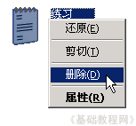

电脑操作基础
十八、删除文件 返回
有些文件没用了，或者自己的文件，需要清理一下，这时候可以对文件进行删除；
1、删除文件
1）打开“我的文档”，在空白处敲右键，选择“新建－文本文件”命令，把文件名改成“练习”，新建一个用于练习的文件；
2）瞄准这个文件，鼠标单击右键，选择“删除”命令；
3）出来一个确认对话框，点“是”，将文件放入回收站中；
4）回到桌面上，打开回收站，可以发现里面有一个“练习”文件，就是我们刚才删除的，
第一次删除是将文件放入到这儿来了，
5）瞄准这个“练习”文件，敲右键选择“删除”命令，（如果选择“还原”命令，可以把文件恢复到原来位置）；

6）出来一个“确认”删除的对话框，点“是”，将文件彻底删除；
注意：删除文件一般不能恢复，因此要特别小心；
本节学习了在WinXP中删除文件的基本方法，如果你成功地完成了练习，请继续学习下一课内容；
本教程由86团学校TeliuTe制作|著作权所有
基础教程网：http://teliute.org/
美丽的校园……
转载和引用本站内容，请保留版权信息和本站链接。